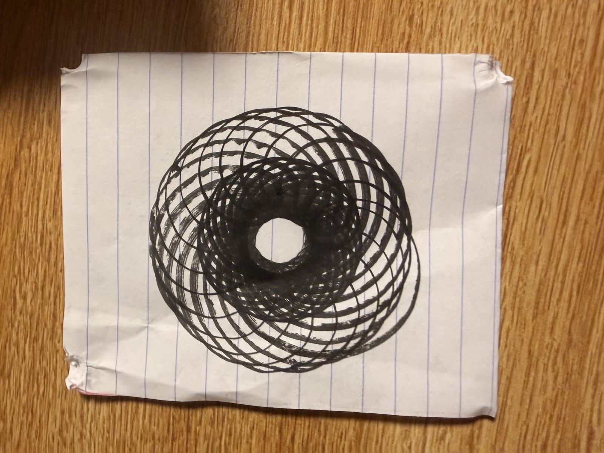
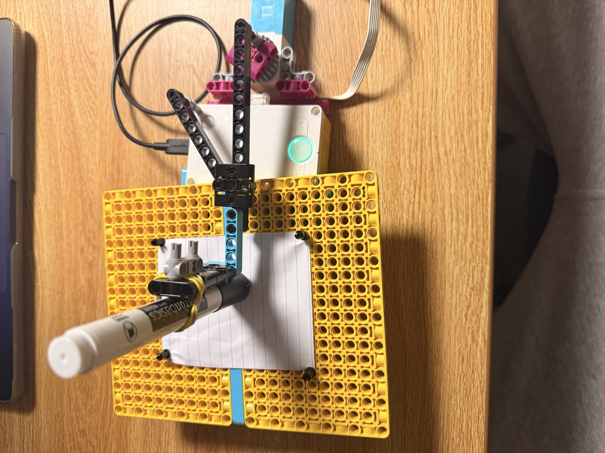
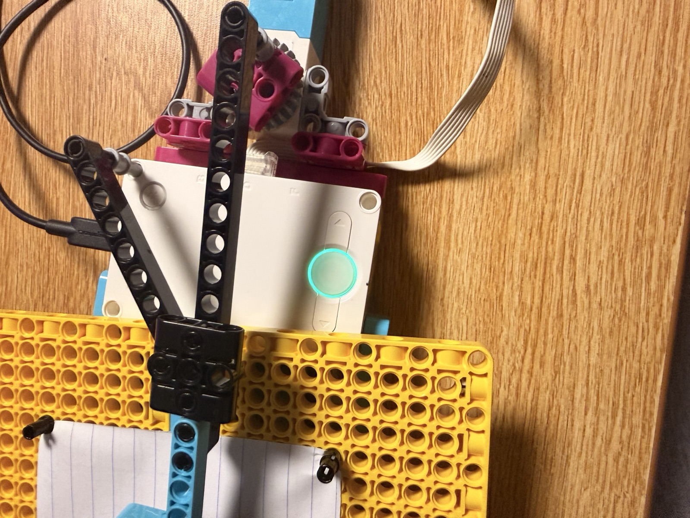

04 M — Sheet 08 / 11
Create geometric designs with two rotating motors.

This one draws. A pen rides on a linked arm, each link turned by its own motor, and the shape it traces depends on how the two speeds relate. The card also asks what actually looks good (simple, complex, or wild) and whether you can predict the drawing from the inputs.
The arm is two beams meeting at a joint, both driven from the hub end. The marker is strapped on with rubber bands so its own weight keeps it on the paper, and the paper is clipped flat to two baseplates so the pen has a fixed sheet while the arm swings.


I ran the motors at 210 and 200 degrees per second, 21:20. Matched speeds would just retrace one loop forever. Slightly off, each pass lands a little rotated from the last, so the loops crawl around the center. The motors come back into step after 21 turns of one and 20 of the other (36 seconds at those speeds), and after that the pen is redrawing the same path.
The run was about 49 seconds, the video at the bottom is the whole thing. One full cycle plus a bit, and you can see it on the sheet: the loops close into a ring, the middle is inked nearly solid, and there's one small gap in the center the pen never reached.
The challenge asks if you can change the speed difference without touching the code. You can, with gears. Put a gear pair between one motor and its arm and that arm runs at a new speed while the code still says 210 and 200.
# Setup: spirograph motors are connected to ports C and D.
from hub import port
import runloop
import motor
async def main():
# Run the motors continuously at a close 21:20 speed ratio.
motor.run(port.C, 210)
motor.run(port.D, 200)
# Keep the spirograph drawing until you stop the program.
while True:
await runloop.sleep_ms(10)
runloop.run(main())